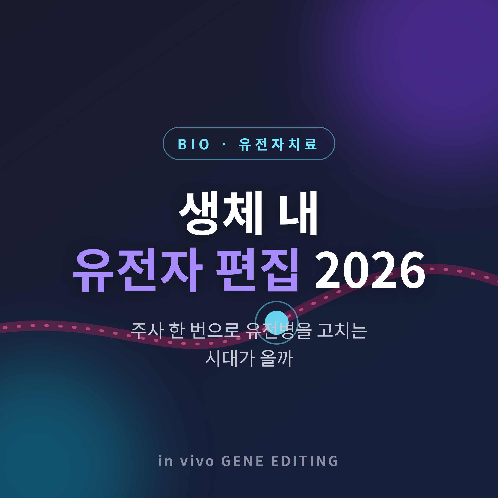
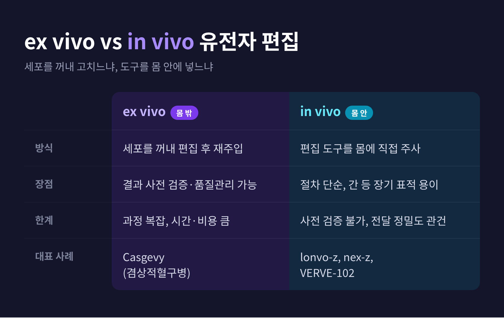
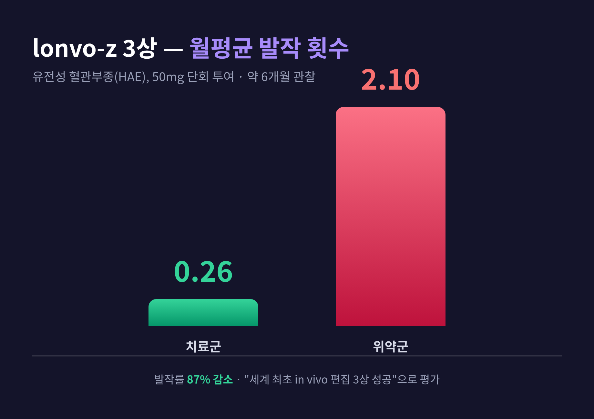
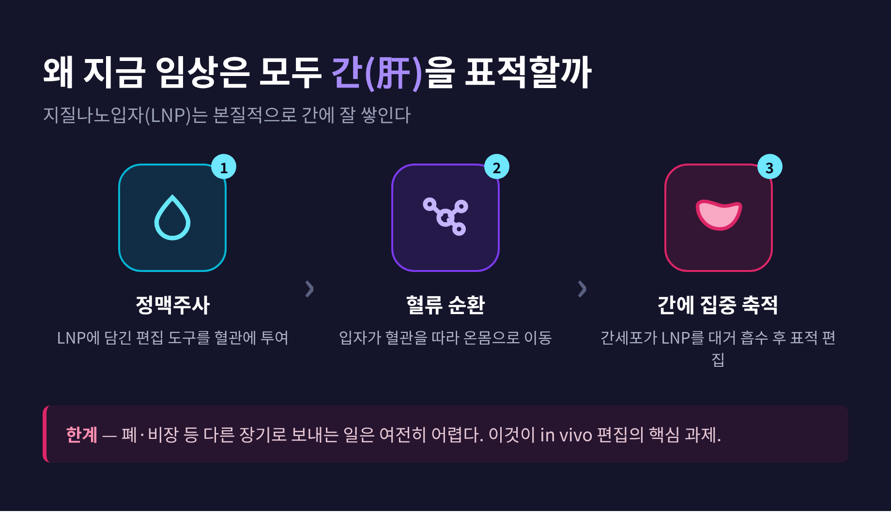

[바이오] 생체 내 유전자 편집 2026 — 주사 한 번으로 유전병을 고치는 시대가 올까
이번 글에서는 2026년 현재 in vivo 유전자 편집이 어디까지 왔는지 정리해 보겠습니다.
세 줄로 먼저 요약하면 이렇습니다.
- 몸 밖에서 세포를 편집하던 방식을 넘어, 도구를 몸 안에 직접 주사하는 in vivo 편집이 후기 임상 성과를 내고 있습니다.
- 유전성 혈관부종 치료제 lonvo-z가 3상에서 발작 87% 감소를 보고했고, 2027년 상반기 첫 상업화가 거론됩니다.
- 다만 대부분 아직 임상 단계이며, 한 환자 사망 사건이 보여주듯 안전성은 완전히 확립되지 않았습니다.
핵심 답변을 먼저 드리면, 기술은 분명 현실로 다가왔지만 "완성된 치료"라고 부르기엔 이릅니다.
■ ex vivo와 in vivo는 무엇이 다른가
먼저 두 방식의 차이부터 짚겠습니다.
예전엔 환자의 세포를 몸 밖으로 꺼내 실험실에서 편집한 뒤 다시 넣었습니다(ex vivo).
지금은 편집 도구를 몸 안에 직접 주사해 체내 세포를 고칩니다(in vivo).
ex vivo는 편집 결과를 미리 검증할 수 있다는 장점이 있습니다.
대신 세포 채취와 골수 전처리 같은 과정이 복잡하고, 시간과 비용이 큽니다.
in vivo는 세포를 꺼낼 필요가 없어 절차가 단순합니다.
다만 편집 결과를 사전에 확인할 수 없어, 도구를 정확한 세포에 보내는 정밀도가 관건입니다.
| 구분 | ex vivo (몸 밖) | in vivo (몸 안) |
|---|---|---|
| 방식 | 세포를 꺼내 편집 후 재주입 | 편집 도구를 몸에 직접 주사 |
| 장점 | 결과 사전 검증·품질관리 가능 | 절차 단순, 간 같은 장기 표적 용이 |
| 한계 | 과정 복잡, 시간·비용 큼 | 사전 검증 불가, 전달 정밀도가 관건 |
| 대표 사례 | Casgevy (겸상적혈구병) | lonvo-z, nex-z, VERVE-102 |

ex vivo의 대표 주자는 Casgevy입니다.
세계 최초로 임상 승인된 CRISPR 기반 편집 치료제로, 겸상적혈구병은 2023년 12월, 베타지중해빈혈은 2024년 1월 FDA 승인을 받았습니다.
24개월 추적에서 31명 중 29명이 최소 12개월간 중증 혈관폐색 위기를 겪지 않았습니다.
다만 1회 치료 정가가 약 220만 달러에 이릅니다.
접근성과 보험 적용이 큰 과제로 남아 있습니다.
■ 2026년, 어디까지 왔나
올해 가장 주목받는 사례는 유전성 혈관부종(HAE) 치료제 lonvo-z입니다.
정맥주사 한 번으로 간세포의 KLKB1 유전자를 비활성화해, 붓는 발작을 막는 원리입니다.
3상(HAELO)에서 50mg 단회 투여군은 약 6개월간 발작률이 87% 감소했습니다.
월평균 발작이 치료군 0.26회, 위약군 2.10회였습니다.
복수 매체는 이를 "세계 최초 in vivo 편집 3상 성공"으로 평가합니다.
FDA에 허가 신청을 진행 중이며, 2026년 하반기 제출 완료와 2027년 상반기 미국 출시가 전망됩니다.

심혈관 쪽도 빠르게 움직이고 있습니다.
Verve(Eli Lilly 산하)의 VERVE-102는 염기편집으로 간의 PCSK9 유전자를 꺼 LDL 콜레스테롤을 낮춥니다.
1b상에서 PCSK9가 용량에 따라 51~88% 감소했고, LDL은 평균 53%, 최대 69%까지 떨어졌습니다.
효과는 최대 18개월 지속됐습니다.
희귀병을 넘어 거대한 심혈관 환자군으로 확장될 수 있다는 점에서, 상업적으로 가장 변혁적인 영역으로 꼽힙니다.
DNA를 자르지 않는 차세대 편집도 임상에 들어왔습니다.
한 염기만 바꾸는 염기편집, 점 돌연변이를 정밀하게 교정하는 프라임편집, 서열은 그대로 두고 발현만 켜고 끄는 에피지놈 편집이 그것입니다.
Tune Therapeutics의 TUNE-401은 만성 B형 간염을 표적해, 1상에서 강한 항바이러스 활성을 보고했습니다.
■ 그래도 남는 과제들
여기서 균형을 잡아야 합니다.
가장 무겁게 다뤄야 할 사건이 있습니다.
Intellia의 ATTR 치료제 nex-z 3상에서, 한 환자가 2025년 9월 투여 후 Grade 4 간 기능부전을 겪고 11월 사망했습니다.
FDA는 해당 임상에 보류를 부과했고, 안전 강화 조치를 더한 뒤 2026년 초 보류를 해제했습니다.
발생률은 투여 환자 450여 명 중 1% 미만이었습니다.
중요한 점은, 독성의 원인이 아직 규명되지 않았다는 사실입니다.
전달에 쓰인 지질나노입자 때문인지, 편집 활성 때문인지, 환자 특이 취약성 때문인지 조사가 진행 중입니다.
업계에서는 "Cas9 기반 접근의 한계인가"라는 논의가 일었습니다.
전달 기술에도 분명한 한계가 있습니다.
지질나노입자(LNP)는 본질적으로 간에 잘 쌓입니다.
그래서 올해 임상들이 모두 간을 표적으로 삼습니다.
반대로 폐나 비장 같은 다른 장기로 보내는 일은 여전히 어렵습니다.

비용과 윤리 문제도 남습니다.
앞서 본 치료들은 모두 다음 세대로 유전되지 않는 체세포 편집입니다.
유전되는 생식세포 편집과는 분명히 구분됩니다.
간 표적 in vivo 편집이 장기적으로 더 낮은 비용과 더 나은 안전 마진을 가질 수 있다는 기대가 있습니다만, 현재로선 미확정입니다.
한 가지 덧붙이면, 흔히 인용되는 시장 규모 수치는 기관마다 편차가 큽니다.
2035년 약 377억 달러 같은 전망은 어디까지나 추정치로 받아들이시길 권합니다.
정리하면 이렇습니다.
2026년의 in vivo 유전자 편집은 "실험실의 약속"에서 "임상의 현실"로 한 걸음 넘어왔습니다.
첫 상업화가 눈앞에 있고, 심혈관처럼 큰 환자군으로 가는 길도 열리고 있습니다.
그러나 한 환자의 죽음이 일깨우듯, 안전성과 효능은 아직 충분히 검증되는 과정에 있습니다.
— 기대와 신중함을 같은 무게로 들어야 할 시간입니다.
새로운 치료법에 희망을 거는 분이 계신다면, 부디 담당 의료진과 충분히 상의하시길 바랍니다.